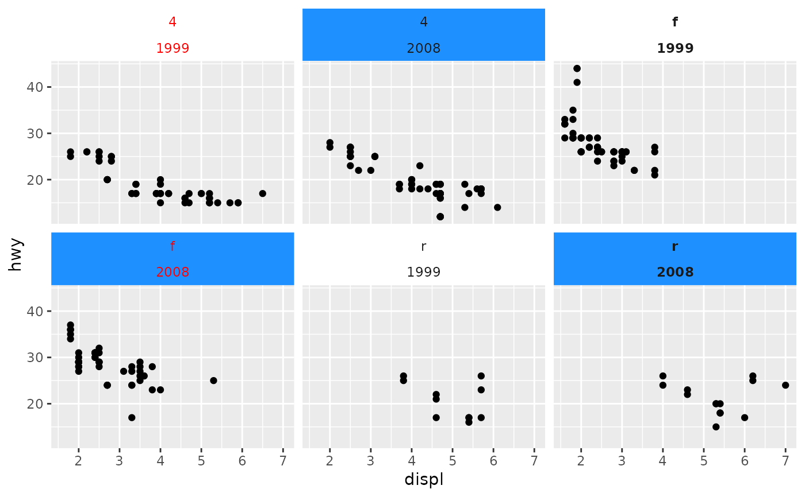
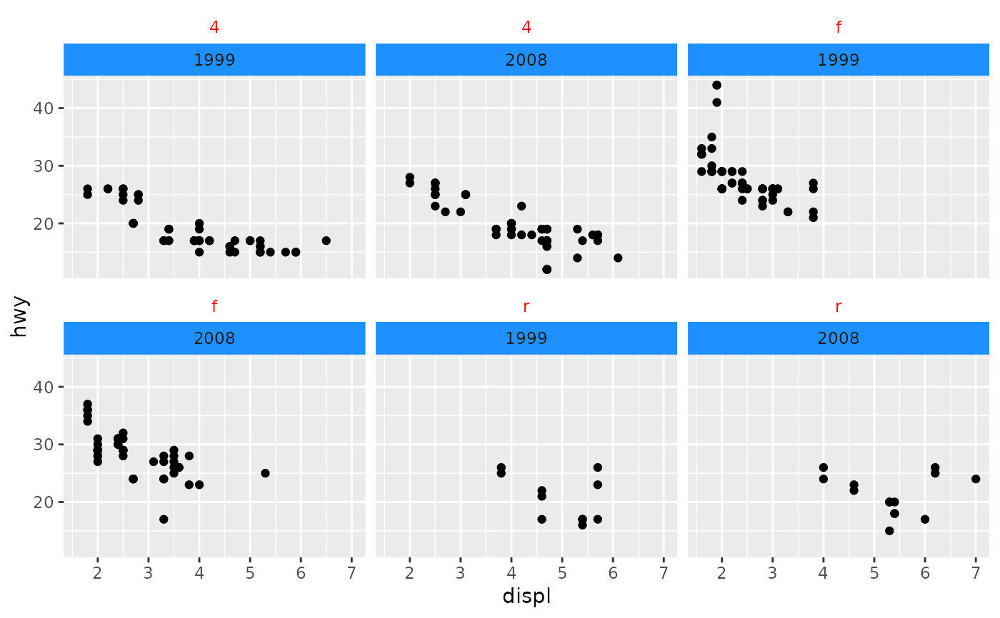
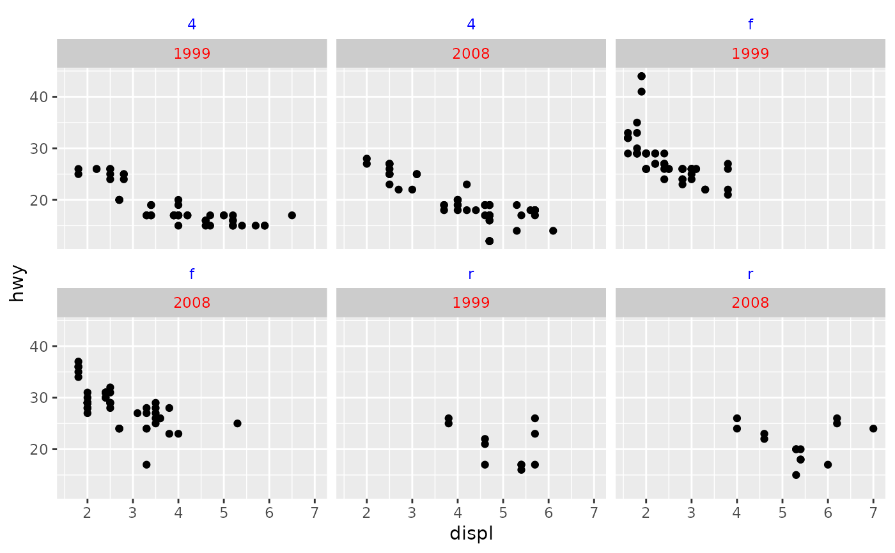

A style of strips with individually themed strips.
Usage
strip_themed(
clip = "inherit",
size = "constant",
text_x = NULL,
text_y = NULL,
background_x = NULL,
background_y = NULL,
by_layer_x = FALSE,
by_layer_y = FALSE
)Arguments
- clip
A
character(1)that controls whether text labels are clipped to the background boxes. Can be either"inherit"(default),"on"or"off".- size
A
character(1)stating that the strip margins in different layers remain"constant"or are"variable".- text_x, text_y
A
list()withelement_text()elements. See details.- background_x, background_y
A
list()withelement_rect()elements. See details.- by_layer_x, by_layer_y
A
logical(1)that whenTRUE, maps the different elements to different layers of the strip. WhenFALSE, maps the different elements to individual strips, possibly repeating the elements to match the number of strips throughrep_len().
Details
With respect to the text_* and background_* arguments, they can
be a list with (a mix of) the following objects:
NULLindicates that the global plot theme applies.element_blank()omits drawing the background or text.An
elementclass object inheriting from theelement_textorelement_rectclasses.
For constructing homogeneous lists of elements, the
elem_list_text() and
elem_list_rect() are provided for convenience.
See also
Other strips:
strip_nested(),
strip_split(),
strip_vanilla()
Examples
# Some simple plot
p <- ggplot(mpg, aes(displ, hwy)) +
geom_point()
# Set some theming options, we can use `element_blank()`
backgrounds <- list(element_blank(), element_rect(fill = "dodgerblue"))
# Or we could use `NULL` to use the global theme
texts <- list(element_text(colour = "red"), NULL, element_text(face = "bold"))
# Elements are repeated until the fit the number of facets
p + facet_wrap2(
vars(drv, year),
strip = strip_themed(
background_x = backgrounds,
text_x = texts
)
)

# Except when applied to each layer instead of every strip
p + facet_wrap2(
vars(drv, year),
strip = strip_themed(
background_x = backgrounds,
text_x = texts,
by_layer_x = TRUE
)
)

# To conveniently distribute arguments over a list of the same elements,
# you can use the following wrappers:
p + facet_wrap2(
vars(drv, year),
strip = strip_themed(
text_x = elem_list_text(colour = c("blue", "red")),
background_x = elem_list_rect(fill = c("white", "grey80")),
by_layer_x = TRUE
)
)
